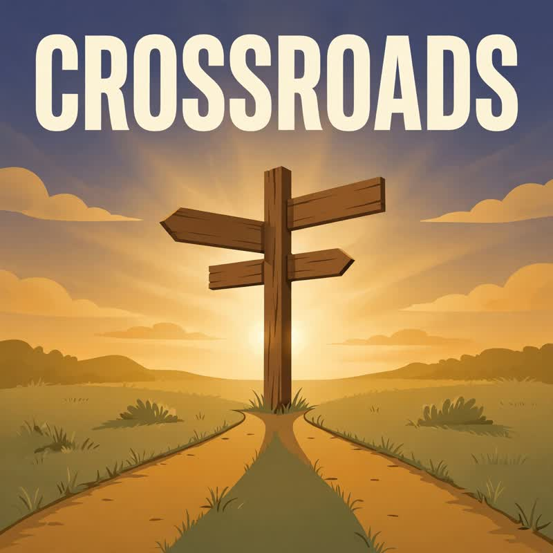

Adventist Stories For Teens
Nothing playing yet
Pick an episode below, or press Play All.
Every episode is a complete story, followed by a thoughtful discussion from a biblical perspective. New episodes are added here as they are finished.
∞ Keep playing with screen off: plays ~2-hour recordings, so episodes keep going even when your phone screen turns off. The lock screen still shows the episode that is playing.
Also on Spotify · full-quality files and the Episodes 1–21 play-all recording are in the Google Drive folder · all 50 episodes on one page: All Episodes.